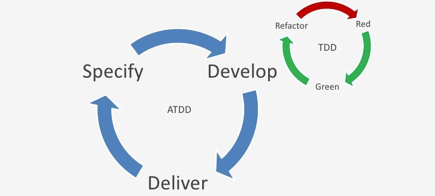

<!DOCTYPE HTML>
<html lang="" >
    <head>
        <meta charset="UTF-8">
        <meta content="text/html; charset=utf-8" http-equiv="Content-Type">
        <title>6. 用户故事验收测试 · GitBook</title>
        <meta http-equiv="X-UA-Compatible" content="IE=edge" />
        <meta name="description" content="">
        <meta name="generator" content="GitBook 3.2.3">
        
        
        
    
    <link rel="stylesheet" href="../gitbook/style.css">

    
            
                
                <link rel="stylesheet" href="../gitbook/gitbook-plugin-anchors/plugin.css">
                
            
                
                <link rel="stylesheet" href="../gitbook/gitbook-plugin-highlight/website.css">
                
            
                
                <link rel="stylesheet" href="../gitbook/gitbook-plugin-search/search.css">
                
            
                
                <link rel="stylesheet" href="../gitbook/gitbook-plugin-fontsettings/website.css">
                
            
        

    

    
        
    
        
    
        
    
        
    
        
    
        
    

        
    
    
    
    <meta name="HandheldFriendly" content="true"/>
    <meta name="viewport" content="width=device-width, initial-scale=1, user-scalable=no">
    <meta name="apple-mobile-web-app-capable" content="yes">
    <meta name="apple-mobile-web-app-status-bar-style" content="black">
    <link rel="apple-touch-icon-precomposed" sizes="152x152" href="../gitbook/images/apple-touch-icon-precomposed-152.png">
    <link rel="shortcut icon" href="../gitbook/images/favicon.ico" type="image/x-icon">

    
    <link rel="next" href="6.1.html" />
    
    
    <link rel="prev" href="../ch5/brief.html" />
    

    <style>
    @media only screen and (max-width: 640px) {
        .book-header .hidden-mobile {
            display: none;
        }
    }
    </style>
    <script>
        window["gitbook-plugin-github-buttons"] = {"buttons":[{"user":"tonydeng","repo":"user-stories-applied","type":"star","size":"small","count":true},{"user":"tonydeng","type":"follow","size":"small","width":"170","count":true},{"user":"tonydeng","type":"watch","size":"small","count":true}]};
    </script>

    </head>
    <body>
        
<div class="book">
    <div class="book-summary">
        
            
<div id="book-search-input" role="search">
    <input type="text" placeholder="Type to search" />
</div>

            
                <nav role="navigation">
                


<ul class="summary">
    
    

    

    
        
        
    
        <li class="chapter " data-level="1.1" data-path="../">
            
                <a href="../">
            
                    
                    敏捷的用户故事方法
            
                </a>
            

            
        </li>
    
        <li class="chapter " data-level="1.2" data-path="../starting.html">
            
                <a href="../starting.html">
            
                    
                    一、起步
            
                </a>
            

            
            <ul class="articles">
                
    
        <li class="chapter " data-level="1.2.1" data-path="../ch1/">
            
                <a href="../ch1/">
            
                    
                    1. 背景
            
                </a>
            

            
            <ul class="articles">
                
    
        <li class="chapter " data-level="1.2.1.1" data-path="../ch1/1.1.html">
            
                <a href="../ch1/1.1.html">
            
                    
                    1.1. 什么是用户故事？
            
                </a>
            

            
        </li>
    
        <li class="chapter " data-level="1.2.1.2" data-path="../ch1/1.2.html">
            
                <a href="../ch1/1.2.html">
            
                    
                    1.2. 细节在哪里？
            
                </a>
            

            
        </li>
    
        <li class="chapter " data-level="1.2.1.3" data-path="../ch1/1.3.html">
            
                <a href="../ch1/1.3.html">
            
                    
                    1.3. “必须多长时间完成”
            
                </a>
            

            
        </li>
    
        <li class="chapter " data-level="1.2.1.4" data-path="../ch1/1.4.html">
            
                <a href="../ch1/1.4.html">
            
                    
                    1.4. 客户团队
            
                </a>
            

            
        </li>
    
        <li class="chapter " data-level="1.2.1.5" data-path="../ch1/1.5.html">
            
                <a href="../ch1/1.5.html">
            
                    
                    1.5. 使用故事的过程是怎么样的？
            
                </a>
            

            
        </li>
    
        <li class="chapter " data-level="1.2.1.6" data-path="../ch1/1.6.html">
            
                <a href="../ch1/1.6.html">
            
                    
                    1.6. 规划发布和迭代
            
                </a>
            

            
        </li>
    
        <li class="chapter " data-level="1.2.1.7" data-path="../ch1/1.7.html">
            
                <a href="../ch1/1.7.html">
            
                    
                    1.7. 什么是验收测试？
            
                </a>
            

            
        </li>
    
        <li class="chapter " data-level="1.2.1.8" data-path="../ch1/1.8.html">
            
                <a href="../ch1/1.8.html">
            
                    
                    1.8. 为什么要变成用户故事？
            
                </a>
            

            
        </li>
    
        <li class="chapter " data-level="1.2.1.9" data-path="../ch1/brief.html">
            
                <a href="../ch1/brief.html">
            
                    
                    1.9. 小结
            
                </a>
            

            
        </li>
    

            </ul>
            
        </li>
    
        <li class="chapter " data-level="1.2.2" data-path="../ch2/">
            
                <a href="../ch2/">
            
                    
                    2. 编写故事
            
                </a>
            

            
            <ul class="articles">
                
    
        <li class="chapter " data-level="1.2.2.1" data-path="../ch2/2.1.html">
            
                <a href="../ch2/2.1.html">
            
                    
                    2.1. 独立的
            
                </a>
            

            
        </li>
    
        <li class="chapter " data-level="1.2.2.2" data-path="../ch2/2.2.html">
            
                <a href="../ch2/2.2.html">
            
                    
                    2.2. 可讨论的
            
                </a>
            

            
        </li>
    
        <li class="chapter " data-level="1.2.2.3" data-path="../ch2/2.3.html">
            
                <a href="../ch2/2.3.html">
            
                    
                    2.3. 对用户或客户有价值的
            
                </a>
            

            
        </li>
    
        <li class="chapter " data-level="1.2.2.4" data-path="../ch2/2.4.html">
            
                <a href="../ch2/2.4.html">
            
                    
                    2.4. 可评估的
            
                </a>
            

            
        </li>
    
        <li class="chapter " data-level="1.2.2.5" data-path="../ch2/2.5.html">
            
                <a href="../ch2/2.5.html">
            
                    
                    2.5. 小的
            
                </a>
            

            
        </li>
    
        <li class="chapter " data-level="1.2.2.6" data-path="../ch2/2.6.html">
            
                <a href="../ch2/2.6.html">
            
                    
                    2.6. 可测试的
            
                </a>
            

            
        </li>
    
        <li class="chapter " data-level="1.2.2.7" data-path="../ch2/2.7.html">
            
                <a href="../ch2/2.7.html">
            
                    
                    2.7. 职责
            
                </a>
            

            
        </li>
    
        <li class="chapter " data-level="1.2.2.8" data-path="../ch2/brief.html">
            
                <a href="../ch2/brief.html">
            
                    
                    2.8. 小结
            
                </a>
            

            
        </li>
    

            </ul>
            
        </li>
    
        <li class="chapter " data-level="1.2.3" data-path="../ch3/">
            
                <a href="../ch3/">
            
                    
                    3. 用户角色建模
            
                </a>
            

            
            <ul class="articles">
                
    
        <li class="chapter " data-level="1.2.3.1" data-path="../ch3/3.1.html">
            
                <a href="../ch3/3.1.html">
            
                    
                    3.1. 用户角色
            
                </a>
            

            
        </li>
    
        <li class="chapter " data-level="1.2.3.2" data-path="../ch3/3.2.html">
            
                <a href="../ch3/3.2.html">
            
                    
                    3.2. 角色建模的步骤
            
                </a>
            

            
        </li>
    
        <li class="chapter " data-level="1.2.3.3" data-path="../ch3/3.3.html">
            
                <a href="../ch3/3.3.html">
            
                    
                    3.3. “虚构人物”和“极端人物”
            
                </a>
            

            
        </li>
    
        <li class="chapter " data-level="1.2.3.4" data-path="../ch3/3.4.html">
            
                <a href="../ch3/3.4.html">
            
                    
                    3.4. 如果有现场用户该如何？
            
                </a>
            

            
        </li>
    
        <li class="chapter " data-level="1.2.3.5" data-path="../ch3/3.5.html">
            
                <a href="../ch3/3.5.html">
            
                    
                    3.5. 职责
            
                </a>
            

            
        </li>
    
        <li class="chapter " data-level="1.2.3.6" data-path="../ch3/brief.html">
            
                <a href="../ch3/brief.html">
            
                    
                    3.6. 小结
            
                </a>
            

            
        </li>
    

            </ul>
            
        </li>
    
        <li class="chapter " data-level="1.2.4" data-path="../ch4/">
            
                <a href="../ch4/">
            
                    
                    4. 收集故事
            
                </a>
            

            
            <ul class="articles">
                
    
        <li class="chapter " data-level="1.2.4.1" data-path="../ch4/4.1.html">
            
                <a href="../ch4/4.1.html">
            
                    
                    4.1. 用“拖网”来收集需求
            
                </a>
            

            
        </li>
    
        <li class="chapter " data-level="1.2.4.2" data-path="../ch4/4.2.html">
            
                <a href="../ch4/4.2.html">
            
                    
                    4.2. 够用就行，不是吗
            
                </a>
            

            
        </li>
    
        <li class="chapter " data-level="1.2.4.3" data-path="../ch4/4.3.html">
            
                <a href="../ch4/4.3.html">
            
                    
                    4.3. 方法
            
                </a>
            

            
            <ul class="articles">
                
    
        <li class="chapter " data-level="1.2.4.3.1" data-path="../ch4/4.3.1.html">
            
                <a href="../ch4/4.3.1.html">
            
                    
                    4.3.1. 用户访谈
            
                </a>
            

            
        </li>
    
        <li class="chapter " data-level="1.2.4.3.2" data-path="../ch4/4.3.2.html">
            
                <a href="../ch4/4.3.2.html">
            
                    
                    4.3.2. 问卷调查
            
                </a>
            

            
        </li>
    
        <li class="chapter " data-level="1.2.4.3.3" data-path="../ch4/4.3.3.html">
            
                <a href="../ch4/4.3.3.html">
            
                    
                    4.3.3. 观察
            
                </a>
            

            
        </li>
    
        <li class="chapter " data-level="1.2.4.3.4" data-path="../ch4/4.3.4.html">
            
                <a href="../ch4/4.3.4.html">
            
                    
                    4.3.4. 故事编写工作坊
            
                </a>
            

            
        </li>
    

            </ul>
            
        </li>
    
        <li class="chapter " data-level="1.2.4.4" data-path="../ch4/4.4.html">
            
                <a href="../ch4/4.4.html">
            
                    
                    4.4. 职责
            
                </a>
            

            
        </li>
    
        <li class="chapter " data-level="1.2.4.5" data-path="../ch4/brief.html">
            
                <a href="../ch4/brief.html">
            
                    
                    4.5. 小结
            
                </a>
            

            
        </li>
    

            </ul>
            
        </li>
    
        <li class="chapter " data-level="1.2.5" data-path="../ch5/">
            
                <a href="../ch5/">
            
                    
                    5. 与用户代理合作
            
                </a>
            

            
            <ul class="articles">
                
    
        <li class="chapter " data-level="1.2.5.1" data-path="../ch5/5.1.html">
            
                <a href="../ch5/5.1.html">
            
                    
                    5.1 用户的经理
            
                </a>
            

            
        </li>
    
        <li class="chapter " data-level="1.2.5.2" data-path="../ch5/5.2.html">
            
                <a href="../ch5/5.2.html">
            
                    
                    5.2 开发经理
            
                </a>
            

            
        </li>
    
        <li class="chapter " data-level="1.2.5.3" data-path="../ch5/5.3.html">
            
                <a href="../ch5/5.3.html">
            
                    
                    5.3 销售人员
            
                </a>
            

            
        </li>
    
        <li class="chapter " data-level="1.2.5.4" data-path="../ch5/5.4.html">
            
                <a href="../ch5/5.4.html">
            
                    
                    5.4 领域专家
            
                </a>
            

            
        </li>
    
        <li class="chapter " data-level="1.2.5.5" data-path="../ch5/5.5.html">
            
                <a href="../ch5/5.5.html">
            
                    
                    5.5 市场营销团队
            
                </a>
            

            
        </li>
    
        <li class="chapter " data-level="1.2.5.6" data-path="../ch5/5.6.html">
            
                <a href="../ch5/5.6.html">
            
                    
                    5.6 以前的用户
            
                </a>
            

            
        </li>
    
        <li class="chapter " data-level="1.2.5.7" data-path="../ch5/5.7.html">
            
                <a href="../ch5/5.7.html">
            
                    
                    5.7 客户
            
                </a>
            

            
        </li>
    
        <li class="chapter " data-level="1.2.5.8" data-path="../ch5/5.8.html">
            
                <a href="../ch5/5.8.html">
            
                    
                    5.8 培训师和技术支持
            
                </a>
            

            
        </li>
    
        <li class="chapter " data-level="1.2.5.9" data-path="../ch5/5.9.html">
            
                <a href="../ch5/5.9.html">
            
                    
                    5.9 业务分析师或系统分析师
            
                </a>
            

            
        </li>
    
        <li class="chapter " data-level="1.2.5.10" data-path="../ch5/5.10.html">
            
                <a href="../ch5/5.10.html">
            
                    
                    5.10 与用户代理合作时，做些什么？
            
                </a>
            

            
        </li>
    
        <li class="chapter " data-level="1.2.5.11" data-path="../ch5/5.11.html">
            
                <a href="../ch5/5.11.html">
            
                    
                    5.11 可以自己来吗？
            
                </a>
            

            
        </li>
    
        <li class="chapter " data-level="1.2.5.12" data-path="../ch5/5.12.html">
            
                <a href="../ch5/5.12.html">
            
                    
                    5.12 建立客户团队
            
                </a>
            

            
        </li>
    
        <li class="chapter " data-level="1.2.5.13" data-path="../ch5/5.13.html">
            
                <a href="../ch5/5.13.html">
            
                    
                    5.13 职责
            
                </a>
            

            
        </li>
    
        <li class="chapter " data-level="1.2.5.14" data-path="../ch5/brief.html">
            
                <a href="../ch5/brief.html">
            
                    
                    5.14 小结
            
                </a>
            

            
        </li>
    

            </ul>
            
        </li>
    
        <li class="chapter active" data-level="1.2.6" data-path="./">
            
                <a href="./">
            
                    
                    6. 用户故事验收测试
            
                </a>
            

            
            <ul class="articles">
                
    
        <li class="chapter " data-level="1.2.6.1" data-path="6.1.html">
            
                <a href="6.1.html">
            
                    
                    6.1. 在写代码之前写测试
            
                </a>
            

            
        </li>
    
        <li class="chapter " data-level="1.2.6.2" data-path="6.2.html">
            
                <a href="6.2.html">
            
                    
                    6.2. 客户定义测试
            
                </a>
            

            
        </li>
    
        <li class="chapter " data-level="1.2.6.3" data-path="6.3.html">
            
                <a href="6.3.html">
            
                    
                    6.3. 测试是过程的一部分
            
                </a>
            

            
        </li>
    
        <li class="chapter " data-level="1.2.6.4" data-path="6.4.html">
            
                <a href="6.4.html">
            
                    
                    6.4. 多少测试才算多？
            
                </a>
            

            
        </li>
    
        <li class="chapter " data-level="1.2.6.5" data-path="6.5.html">
            
                <a href="6.5.html">
            
                    
                    6.5. 验收测试
            
                </a>
            

            
        </li>
    
        <li class="chapter " data-level="1.2.6.6" data-path="6.6.html">
            
                <a href="6.6.html">
            
                    
                    6.6. 测试类型
            
                </a>
            

            
        </li>
    
        <li class="chapter " data-level="1.2.6.7" data-path="6.7.html">
            
                <a href="6.7.html">
            
                    
                    6.7. 职责
            
                </a>
            

            
        </li>
    
        <li class="chapter " data-level="1.2.6.8" data-path="brief.html">
            
                <a href="brief.html">
            
                    
                    6.8. 小结
            
                </a>
            

            
        </li>
    

            </ul>
            
        </li>
    
        <li class="chapter " data-level="1.2.7" data-path="../ch7/">
            
                <a href="../ch7/">
            
                    
                    7. 优秀的用户故事准则
            
                </a>
            

            
            <ul class="articles">
                
    
        <li class="chapter " data-level="1.2.7.1" data-path="../ch7/7.1.html">
            
                <a href="../ch7/7.1.html">
            
                    
                    7.1. 从目标故事开始
            
                </a>
            

            
        </li>
    
        <li class="chapter " data-level="1.2.7.2" data-path="../ch7/7.2.html">
            
                <a href="../ch7/7.2.html">
            
                    
                    7.2. 切蛋糕
            
                </a>
            

            
        </li>
    
        <li class="chapter " data-level="1.2.7.3" data-path="../ch7/7.3.html">
            
                <a href="../ch7/7.3.html">
            
                    
                    7.3. 编写封闭的故事
            
                </a>
            

            
        </li>
    
        <li class="chapter " data-level="1.2.7.4" data-path="../ch7/7.4.html">
            
                <a href="../ch7/7.4.html">
            
                    
                    7.4. 卡片约束
            
                </a>
            

            
        </li>
    
        <li class="chapter " data-level="1.2.7.5" data-path="../ch7/7.5.md">
            
                <span>
            
                    
                    7.5. 根据实现时间来确定故事规模
            
                </a>
            

            
        </li>
    
        <li class="chapter " data-level="1.2.7.6" data-path="../ch7/7.6.md">
            
                <span>
            
                    
                    7.6. 有些需求并不是故事
            
                </a>
            

            
        </li>
    
        <li class="chapter " data-level="1.2.7.7" data-path="../ch7/7.7.md">
            
                <span>
            
                    
                    7.7. 在故事里包含故事角色
            
                </a>
            

            
        </li>
    
        <li class="chapter " data-level="1.2.7.8" data-path="../ch7/7.8.md">
            
                <span>
            
                    
                    7.8. 只为一个用户编写
            
                </a>
            

            
        </li>
    
        <li class="chapter " data-level="1.2.7.9" data-path="../ch7/7.9.md">
            
                <span>
            
                    
                    7.9. 以主动语态编写
            
                </a>
            

            
        </li>
    
        <li class="chapter " data-level="1.2.7.10" data-path="../ch7/7.10.md">
            
                <span>
            
                    
                    7.10. 有客户编写
            
                </a>
            

            
        </li>
    
        <li class="chapter " data-level="1.2.7.11" data-path="../ch7/7.11.md">
            
                <span>
            
                    
                    7.11. 不要忘记意图
            
                </a>
            

            
        </li>
    
        <li class="chapter " data-level="1.2.7.12" data-path="../ch7/brief.md">
            
                <span>
            
                    
                    7.12. 小结
            
                </a>
            

            
        </li>
    

            </ul>
            
        </li>
    

            </ul>
            
        </li>
    

    

    <li class="divider"></li>

    <li>
        <a href="https://www.gitbook.com" target="blank" class="gitbook-link">
            Published with GitBook
        </a>
    </li>
</ul>


                </nav>
            
        
    </div>

    <div class="book-body">
        
            <div class="body-inner">
                
                    

<div class="book-header" role="navigation">
    

    <!-- Title -->
    <h1>
        <i class="fa fa-circle-o-notch fa-spin"></i>
        <a href=".." >6. 用户故事验收测试</a>
    </h1>
</div>


                    <div class="page-wrapper" tabindex="-1" role="main">
                        <div class="page-inner">
                            
<div id="book-search-results">
    <div class="search-noresults">
    
                                <section class="normal markdown-section">
                                
                                <h1 id="6-&#x7528;&#x6237;&#x6545;&#x4E8B;&#x9A8C;&#x6536;&#x6D4B;&#x8BD5;"><a name="6-&#x7528;&#x6237;&#x6545;&#x4E8B;&#x9A8C;&#x6536;&#x6D4B;&#x8BD5;" class="plugin-anchor" href="#6-&#x7528;&#x6237;&#x6545;&#x4E8B;&#x9A8C;&#x6536;&#x6D4B;&#x8BD5;"><i class="fa fa-link" aria-hidden="true"></i></a>6. &#x7528;&#x6237;&#x6545;&#x4E8B;&#x9A8C;&#x6536;&#x6D4B;&#x8BD5;</h1>
<p></p>
<p><strong>&#x5199;&#x9A8C;&#x6536;&#x6D4B;&#x8BD5;&#x7684;&#x597D;&#x5904;&#x6709;&#x5F88;&#x591A;&#xFF0C;&#x5176;&#x4E2D;&#x4E4B;&#x4E00;&#x5C31;&#x662F;&#x5F88;&#x591A;&#x5BA2;&#x6237;&#x548C;&#x5F00;&#x53D1;&#x4EBA;&#x5458;&#x8BA8;&#x8BBA;&#x7684;&#x5F88;&#x591A;&#x7EC6;&#x8282;&#x53EF;&#x4EE5;&#x901A;&#x8FC7;&#x9A8C;&#x6536;&#x6D4B;&#x8BD5;&#x8BB0;&#x5F55;&#x4E0B;&#x6765;</strong>&#x3002;</p>
<p>&#x6BD4;&#x8D77;&#x5199;&#x5197;&#x957F;&#x7684;&#x9700;&#x6C42;&#x5217;&#x8868;&#xFF0C;&#x50CF;&#x201C;&#x7CFB;&#x7EDF;&#x5E94;&#x8BE5;...&#x201D;&#xFF0C;&#x53EF;&#x4EE5;&#x7528;&#x6D4B;&#x8BD5;&#x6765;&#x5145;&#x5B9E;&#x5F88;&#x591A;&#x7528;&#x6237;&#x6545;&#x4E8B;&#x7684;&#x7EC6;&#x8282;&#x3002;</p>
<p>&#x6574;&#x7406;&#x9A8C;&#x6536;&#x6D4B;&#x8BD5;&#x662F;&#x57FA;&#x672C;&#x662F;&#x4E24;&#x6B65;&#x6D41;&#x7A0B;&#xFF1A;</p>
<ul>
<li>&#x7B2C;&#x4E00;&#xFF0C;&#x5C06;&#x6D4B;&#x8BD5;&#x8981;&#x70B9;&#x8BB0;&#x5F55;&#x5728;&#x6545;&#x4E8B;&#x5361;&#x7684;&#x80CC;&#x9762;&#xFF0C;&#x4EFB;&#x4F55;&#x65F6;&#x5019;&#x53D1;&#x73B0;&#x65B0;&#x7684;&#x6D4B;&#x8BD5;&#xFF0C;&#x90FD;&#x53EF;&#x4EE5;&#x8BB0;&#x5F55;&#x5230;&#x6545;&#x4E8B;&#x5361;&#x7684;&#x80CC;&#x9762;</li>
<li>&#x7B2C;&#x4E8C;&#xFF0C;&#x5C06;&#x6D4B;&#x8BD5;&#x8981;&#x70B9;&#x53D8;&#x6210;&#x5168;&#x9762;&#x7684;&#x6D4B;&#x8BD5;&#xFF0C;&#x8FD9;&#x4E9B;&#x6D4B;&#x8BD5;&#x53EF;&#x4EE5;&#x7528;&#x6765;&#x6F14;&#x793A;&#x6545;&#x4E8B;&#x5DF2;&#x6B63;&#x786E;&#x3001;&#x5B8C;&#x6574;&#x7684;&#x5B9E;&#x73B0;</li>
</ul>
<p>&#x6BD4;&#x5982;&#xFF0C;&#x4E00;&#x4E2A;&#x8BB0;&#x5F55;&#x5728;&#x6545;&#x4E8B;&#x5361;&#x80CC;&#x9762;&#x7684;&#x6D4B;&#x8BD5;&#x8981;&#x70B9;&#x7684;&#x4F8B;&#x5B50;&#xFF0C;&#x201C;&#x516C;&#x53F8;&#x53EF;&#x4EE5;&#x7528;&#x4FE1;&#x7528;&#x5361;&#x652F;&#x4ED8;&#x53D1;&#x5E03;&#x5DE5;&#x4F5C;&#x7684;&#x8D39;&#x7528;&#x201D;&#xFF0C;&#x8FD9;&#x4E2A;&#x6545;&#x4E8B;&#x5361;&#x7684;&#x80CC;&#x9762;&#x53EF;&#x80FD;&#x4E00;&#x4E0B;&#x8FD9;&#x4E9B;&#x6D4B;&#x8BD5;&#x8981;&#x70B9;&#xFF1A;</p>
<ul>
<li>&#x7528;Visa&#x4FE1;&#x7528;&#x5361;&#x3001;&#x4E07;&#x4E8B;&#x8FBE;&#x4FE1;&#x7528;&#x5361;&#x548C;&#x8FD0;&#x901A;&#x5361;&#x6D4B;&#x8BD5;&#x3002;&#xFF08;&#x901A;&#x8FC7;&#xFF09;</li>
<li>&#x7528;&#x5927;&#x83B1;&#x5361;&#x6D4B;&#x8BD5;&#x3002;&#xFF08;&#x5931;&#x8D25;&#xFF09;</li>
<li>&#x7528;&#x6B63;&#x786E;&#x7684;&#x3001;&#x9519;&#x8BEF;&#x7684;&#x548C;&#x7A7A;&#x7684;&#x5361;&#x6D4B;&#x8BD5;</li>
<li>&#x7528;&#x8FC7;&#x671F;&#x7684;&#x4FE1;&#x7528;&#x5361;&#x6D4B;&#x8BD5;</li>
<li>&#x6D4B;&#x8BD5;&#x4E0D;&#x540C;&#x7684;&#x4EA4;&#x6613;&#x91D1;&#x989D;&#xFF08;&#x5305;&#x62EC;&#x8D85;&#x51FA;&#x4FE1;&#x7528;&#x5361;&#x989D;&#x5EA6;&#x9650;&#x5236;&#xFF09;</li>
</ul>
<p>&#x8FD9;&#x4E9B;&#x6D4B;&#x8BD5;&#x8981;&#x70B9;&#x8BB0;&#x5F55;&#x4E86;&#x5BA2;&#x6237;&#x63D0;&#x51FA;&#x7684;&#x4E00;&#x4E9B;&#x5047;&#x8BBE;&#x3002;</p>
<blockquote>
<p>&#x5047;&#x5B9A;&#x5728;&#x62DB;&#x8058;&#x7F51;&#x7AD9;&#x7684;&#x4F8B;&#x5B50;&#x4E2D;&#x7684;&#x5BA2;&#x6237;&#x5199;&#x4E86;&#x4E00;&#x4E2A;&#x6545;&#x4E8B;&#x201C;&#x6C42;&#x804C;&#x8005;&#x53EF;&#x4EE5;&#x67E5;&#x770B;&#x6307;&#x5B9A;&#x5DE5;&#x4F5C;&#x7684;&#x8BE6;&#x7EC6;&#x4FE1;&#x606F;&#x201D;&#x3002;</p>
<p>&#x5BA2;&#x6237;&#x548C;&#x5F00;&#x53D1;&#x4EBA;&#x5458;&#x8BA8;&#x8BBA;&#x8FD9;&#x4E2A;&#x6545;&#x4E8B;&#xFF0C;&#x786E;&#x5B9A;&#x4E00;&#x4E9B;&#x9700;&#x8981;&#x663E;&#x793A;&#x7684;&#x4E00;&#x4E9B;&#x5DE5;&#x4F5C;&#x4FE1;&#x606F; -- &#x804C;&#x4F4D;&#x540D;&#x79F0;&#xFF0C;&#x63CF;&#x8FF0;&#xFF0C;&#x5DE5;&#x4F5C;&#x5730;&#x70B9;&#xFF0C;&#x85AA;&#x6C34;&#x8303;&#x56F4;&#xFF0C;&#x5982;&#x4F55;&#x7533;&#x8BF7;&#x7B49;&#x7B49;&#x3002;</p>
<p>&#x7136;&#x800C;&#xFF0C;&#x53EF;&#x4EE5;&#x4E86;&#x89E3;&#x5E76;&#x4E0D;&#x662F;&#x6240;&#x6709;&#x516C;&#x53F8;&#x90FD;&#x4F1A;&#x63D0;&#x4F9B;&#x6240;&#x6709;&#x8FD9;&#x4E9B;&#x4FE1;&#x606F;&#xFF0C;&#x6240;&#x4EE5;&#x4ED6;&#x5E0C;&#x671B;&#x7F51;&#x7AD9;&#x80FD;&#x591F;&#x81EA;&#x52A8;&#x5904;&#x7406;&#x672A;&#x586B;&#x7684;&#x6570;&#x636E;&#x3002;</p>
<p>&#x6BD4;&#x5982;&#xFF0C;&#x6CA1;&#x6709;&#x63D0;&#x4F9B;&#x85AA;&#x6C34;&#x4FE1;&#x606F;&#xFF0C;&#x5BA2;&#x6237;&#x751A;&#x81F3;&#x4E0D;&#x5E0C;&#x671B;&#x63D0;&#x4F9B;&#x201C;&#x85AA;&#x6C34;&#x8303;&#x56F4;&#x201D;&#x6807;&#x7B7E;&#x51FA;&#x73B0;&#x5728;&#x5C4F;&#x5E55;&#x4E0A;&#x3002;</p>
<p>&#x8FD9;&#x5E94;&#x8BE5;&#x5728;&#x4E00;&#x4E2A;&#x6D4B;&#x8BD5;&#x91CC;&#x53CD;&#x6620;&#xFF0C;&#x56E0;&#x4E3A;&#x7A0B;&#x5E8F;&#x5458;&#x53EF;&#x80FD;&#x4F1A;&#x5047;&#x5B9A;&#x7CFB;&#x7EDF;&#x53D1;&#x5E03;&#x5DE5;&#x4F5C;&#x6A21;&#x5757;&#x8981;&#x6C42;&#x6240;&#x6709;&#x5DE5;&#x4F5C;&#x90FD;&#x63D0;&#x4F9B;&#x85AA;&#x6C34;&#x4FE1;&#x606F;&#x3002;</p>
</blockquote>
<p><strong>&#x9A8C;&#x6536;&#x6D4B;&#x8BD5;&#x4E5F;&#x63D0;&#x4F9B;&#x4E86;&#x786E;&#x8BA4;&#x6545;&#x4E8B;&#x662F;&#x5426;&#x88AB;&#x5B8C;&#x6574;&#x5B9E;&#x73B0;&#x7684;&#x57FA;&#x672C;&#x6807;&#x51C6;</strong>&#x3002;&#x6709;&#x4E86;&#x8FD9;&#x6837;&#x7684;&#x6807;&#x51C6;&#xFF0C;&#x6211;&#x4EEC;&#x5C31;&#x77E5;&#x9053;&#x4EC0;&#x4E48;&#x65F6;&#x5019;&#x67D0;&#x4EF6;&#x4E8B;&#x7B97;&#x662F;&#x505A;&#x5B8C;&#x4E86;&#xFF0C;&#x8FD9;&#x662F;&#x907F;&#x514D;&#x4E86;&#x82B1;&#x592A;&#x591A;&#x6216;&#x592A;&#x5C11;&#x7684;&#x65F6;&#x95F4;&#x548C;&#x7CBE;&#x529B;&#x7684;&#x6700;&#x597D;&#x65B9;&#x6CD5;&#x3002;</p>
<blockquote>
<p>&#x4E3E;&#x4E2A;&#x751F;&#x6D3B;&#x7684;&#x4F8B;&#x5B50;&#xFF0C;&#x6211;&#x59BB;&#x5B50;&#x70E4;&#x86CB;&#x7CD5;&#x65F6;&#xFF0C;&#x5979;&#x7684;&#x9A8C;&#x6536;&#x6807;&#x51C6;&#x5C31;&#x662F;&#x5728;&#x86CB;&#x7CD5;&#x91CC;&#x63D2;&#x4E00;&#x6839;&#x7259;&#x7B7E;&#x3002;&#x5982;&#x679C;&#x7259;&#x7B7E;&#x62FF;&#x51FA;&#x6765;&#x662F;&#x8D76;&#x7D27;&#x7684;&#xFF0C;&#x90A3;&#x4E48;&#x86CB;&#x7CD5;&#x5C31;&#x7B97;&#x662F;&#x505A;&#x597D;&#x4E86;&#x3002;
&#x800C;&#x6211;&#x5219;&#x662F;&#x5C06;&#x624B;&#x6307;&#x63D2;&#x5165;&#x86CB;&#x7CD5;&#xFF0C;&#x7136;&#x540E;&#x5C1D;&#x5C1D;&#xFF0C;&#x4EE5;&#x6B64;&#x6765;&#x9A8C;&#x6536;&#x6D4B;&#x8BD5;&#x5979;&#x505A;&#x7684;&#x86CB;&#x7CD5;&#x3002;</p>
</blockquote>

                                
                                </section>
                            
    </div>
    <div class="search-results">
        <div class="has-results">
            
            <h1 class="search-results-title"><span class='search-results-count'></span> results matching "<span class='search-query'></span>"</h1>
            <ul class="search-results-list"></ul>
            
        </div>
        <div class="no-results">
            
            <h1 class="search-results-title">No results matching "<span class='search-query'></span>"</h1>
            
        </div>
    </div>
</div>

                        </div>
                    </div>
                
            </div>

            
                
                <a href="../ch5/brief.html" class="navigation navigation-prev " aria-label="Previous page: 5.14 小结">
                    <i class="fa fa-angle-left"></i>
                </a>
                
                
                <a href="6.1.html" class="navigation navigation-next " aria-label="Next page: 6.1. 在写代码之前写测试">
                    <i class="fa fa-angle-right"></i>
                </a>
                
            
        
    </div>

    <script>
        var gitbook = gitbook || [];
        gitbook.push(function() {
            gitbook.page.hasChanged({"page":{"title":"6. 用户故事验收测试","level":"1.2.6","depth":2,"next":{"title":"6.1. 在写代码之前写测试","level":"1.2.6.1","depth":3,"path":"ch6/6.1.md","ref":"ch6/6.1.md","articles":[]},"previous":{"title":"5.14 小结","level":"1.2.5.14","depth":3,"path":"ch5/brief.md","ref":"ch5/brief.md","articles":[]},"dir":"ltr"},"config":{"gitbook":"*","theme":"default","variables":{},"plugins":["anchors","ga","github-buttons"],"pluginsConfig":{"search":{},"lunr":{"maxIndexSize":1000000,"ignoreSpecialCharacters":false},"fontsettings":{"theme":"white","family":"sans","size":2},"highlight":{},"github-buttons":{"buttons":[{"user":"tonydeng","repo":"user-stories-applied","type":"star","size":"small","count":true},{"user":"tonydeng","type":"follow","size":"small","width":"170","count":true},{"user":"tonydeng","type":"watch","size":"small","count":true}]},"ga":{"configuration":"auto","token":"UA-80673215-1"},"sharing":{"facebook":true,"twitter":true,"google":false,"weibo":false,"instapaper":false,"vk":false,"all":["facebook","google","twitter","weibo","instapaper"]},"theme-default":{"styles":{"website":"styles/website.css","pdf":"styles/pdf.css","epub":"styles/epub.css","mobi":"styles/mobi.css","ebook":"styles/ebook.css","print":"styles/print.css"},"showLevel":false},"anchors":{}},"structure":{"langs":"LANGS.md","readme":"README.md","glossary":"GLOSSARY.md","summary":"SUMMARY.md"},"pdf":{"pageNumbers":true,"fontSize":12,"fontFamily":"Arial","paperSize":"a4","chapterMark":"pagebreak","pageBreaksBefore":"/","margin":{"right":62,"left":62,"top":56,"bottom":56}},"styles":{"website":"styles/website.css","pdf":"styles/pdf.css","epub":"styles/epub.css","mobi":"styles/mobi.css","ebook":"styles/ebook.css","print":"styles/print.css"}},"file":{"path":"ch6/README.md","mtime":"2019-02-28T04:47:42.287Z","type":"markdown"},"gitbook":{"version":"3.2.3","time":"2019-02-28T04:48:47.010Z"},"basePath":"..","book":{"language":""}});
        });
    </script>
</div>

        
    <script src="../gitbook/gitbook.js"></script>
    <script src="../gitbook/theme.js"></script>
    
        
        <script src="../gitbook/gitbook-plugin-ga/plugin.js"></script>
        
    
        
        <script src="../gitbook/gitbook-plugin-github-buttons/plugin.js"></script>
        
    
        
        <script src="../gitbook/gitbook-plugin-search/search-engine.js"></script>
        
    
        
        <script src="../gitbook/gitbook-plugin-search/search.js"></script>
        
    
        
        <script src="../gitbook/gitbook-plugin-lunr/lunr.min.js"></script>
        
    
        
        <script src="../gitbook/gitbook-plugin-lunr/search-lunr.js"></script>
        
    
        
        <script src="../gitbook/gitbook-plugin-sharing/buttons.js"></script>
        
    
        
        <script src="../gitbook/gitbook-plugin-fontsettings/fontsettings.js"></script>
        
    

    </body>
</html>

